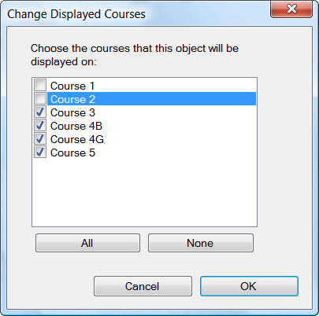

Item/Change Displayed Courses...
Note: This command only appears when a special item (other than a mandatory crossing point) is selected.
Sets which courses a special item is displayed on.

In some cases, you may wish a special item (such as an out-of-bounds area, or a water stop) to only appear on some courses. To set which courses a special item appears on, select the special item, then place check marks next to the courses on which the item should be displayed.